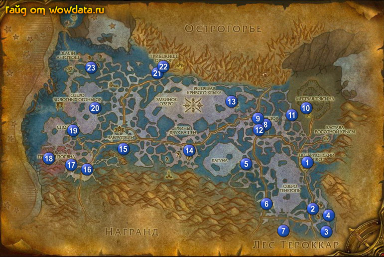

1) Как придете в зону и бегите по дороге, наткнетесь на 2 нпс которые дают квесты: 1.
2) Начните <Племя Тенетопи> и <Растения болот Зангара>. Далее с лева от дороги на верху башни начните <Теплый прием>. Теперь спуститесь с башни и почти напротив через дорогу в гостинице начните <Гибнущее равновесие>.
3) Сделайте Ценарионский оплот вашим домом.
4) Там же в гостинице (на балконе) закончите <Экспедиция Кенариуса> и начните <Неприятности на Озере Тенетопь>.
5) На юге ищите Топехлыст для <Гибнущее равновесие>, это 62 лвл элитный моб но убить такого можно.
6) Идите на юг от Refuge и бейте мобов ради [Неопознанные части растений] для <Растения болот Зангара>, так же когда вы будете у 2 (82, 81) бейте Оракул Тенетопи и Провидец Тенетопи для <Племя Тенетопи>, вы найдете Катару на верху большой башни 3 (85, 90). Восточнее начните <Спасение с озера Тенетопь> 4 (83, 85) – квест на сопровождение нпс, очень простой.
7) Сейчас вы находитесь недалеко от поселка, завершите квест <Растения болот Зангара> прежде чем вернуться в поселок, иначе не сможете взять некоторые другие квесты. Затем идите в лагерь, закончите <Племя Тенетопи>, начните <Темное, сырое место>. Тут же закончите <Растения болот Зангара>, в контейнере который вы получите можетпопасться вещь которая начниет <Неизвестный науке вид>, если он вам попадается туже закончите его – за что получите репутацию. Затем начните <Спасение спорлоков>.
8) Развернитесь и через дорогу начните <Защита наблюдателей>.
9) Идите в гостиницу и закончите <Гибнущее равновесие>, а на балконе закончите <Спасение с озера Тенетопь>.
10) Идите на запад по направлению к Лагуна, по дороге бейте наг для <Теплый прием> в раене 5 (64, 64).
11) Идите на юго-восток от Озеро Тенетопь для <Неприятности на Озере Тенетопь> 6 (70, 80).
12) Идите к 7 (74, 90), бейте Болотный черпальщик и Болотный скрытень для <Спасение спорлоков>. Внутри пещеры (в конце левой части по миникарте) найдите Вещи Икейена на камне для <Темное, сырое место>. Спуститесь в низ пещеры и убейте Лорд Клак для <Защита наблюдателей>.
13) Вернитесь в лaгерь.
14) В гостинице закончите <Неприятности на Озере Тенетопь>, начните <С высоты птичьего полета>, затем используйте амулет из вашего инвентаря для <С высоты птичьего полета>, наслаждайтесь полетом. Как прилетите закончите квест и начните <Необходимо поддерживать равновесие!>.
15) Выйдите из гостиници, через дорогу на верху бушни закончите <Теплый прием>. Выйдите из башни, около колодца закончите <Защита наблюдателей>.
16) Через дорогу у 2 нпс закончите <Темное, сырое место>, <Спасение спорлоков> и <Определение растений>.
17) Теперь репутация с Экспедиция Ценариона должна быть дружественной. Вернитесь к колодцу и начните <Благословение древних мудрецов>. Идите немного на восток и поговорите с Ашьен (дерево такой большое и ходячее), затем идите к южному выходу из поселка и поговорите с Келет (тоже дерево). Вернитесь к колодцу и закончите квест.
18) Идите используйте [Семена Железной лозы] на контроллер 6 (70, 80). Из наг падает свиток который начните <Схема стоков>. Пройдите на северо-запад 5 (63, 65) и используйте [Семена Железной лозы] на контроллер для <Необходимо поддерживать равновесие!>.
19) Бегите на север к Телредор 8 (69, 49). Поднемитесь в город. Как войдете в сам город сразу налево, наните <Мертвая трясина> и <Судьба Туурема>.
20) Откройте пункт полета (лестница сразу после нпс де вы толькочто брали квесты).
21) Спуститесь вниз по лестнице и начните <Руины Бохаму> и <Гавань Оребор>. Спава начните <Неоконченное дело> и чуть севернее начните <Споры гриба-блескуна>. (вобщем начните все квесты что видите).
22) У алхимиков начните <Опасные болотные клыки> и <Слишком много ртов!> 9 (68, 48).
23) Сделайте Телредор вашим домом.
24) Бейте Болотный потрошитель на северо-востоке для <Опасные болотные клыки> и ищите Спора гриба -блескуна (гирбы зеленые, которые везде понатыканы) для <Споры гриба-блескуна>.
25) Идите в Мертвая трясина 10 (80, 43) и делайте <Мертвая трясина>.
26) В юго-западоной части долины вы найдете Спорокрыл 11 (76, 45) для <Неоконченное дело>, вернитесь к Телредор, вокруг него можно найти много зеленых грибов если вы не собрали их ранее.
27) Войдите в Telredor найдите Руам 8 (69, 49) и поговорите с ним. закончите у него <Споры гриба-блескуна>, чуть сзади у дварфа под лестницей закончите <Неоконченное дело>, начните <Проклятие черной бракониды>.
28) У дренея справа закончите <Мертвая трясина> 12 (68, 50), начните <Неестественная засуха>, у алхимиков закончите <Опасные болотные клыки> 12 (68, 48), начните <Филе угрей из озера Тенетопь>.
29) Идите на юго-восток к Umbrafen Lake ищите там и бейте Болотная гидра в воде для <Слишком много ртов!> и Угорь Тенетопи для <Филе угрей из озера Тенетопь> (у вас есть 3 заряда у бутылки чтобы дышать под водой, 1 заряд вам сейчас нужно сохранить, попроще будет варлокам друидам и шаманам).
30) Когда закончите идите в Ценарионский оплот, в гостинице начните <Что случилось в Перелеске Ценариона?> и <Караульный Лиса'о>, затем бегите на востог поселка к 2 нпс и сдайте [Неопознанные части растений] все что есть.
31) Идите на юг в Мертвая трясина и бейте Высохший великан для <Неестественная засуха>, бейте Болотник и соберите 6 [Усик болотника], сохраните их на будующее. Если пока вы били мобов вам не выпал [Высохшая базидия], то бейте Высохший великан пока не выпадает, так как он начинат квест <Высохшая базидия>.
32) Идите на юго-запад обратно в Телредор, как поднимитесь в город идите налево и закончите <Неестественная засуха>. Развернитесь и идите закончите <Высохшая базидия> 8 (69, 49), начните <Иссохшее тело>.
33) Идите к алхимикам закончите <Филе угрей из озера Тенетопь>, рядом закончите <Слишком много ртов!> и начните <Прозрачные крылья> (для этого квеста бейте различных ээээм вобщем летающих насекомых, пока будете делать другие квесты, вы легко соберете с них 8 итемов).
34) Когда будете на западе собирайте Пламеневик (типа такие красные грибы чтоли) для получения репутации (необходимо сдавать по 20 штук).
35) Идите 13 (61, 40) на северо-западе и используйте [Семена Железной лозы] на панель управления для квеста <Необходимо поддерживать равновесие!>.
36) Идите бейте Черная браконида 14 (49, 59) для <Проклятие черной бракониды>.
37) Идите на юго-запад к Руины Бохаму завершите <Руины Бохаму> пройдя в сами руины чуть поглубже (не агрите элитника).
38) Идите бейте "Граф" Унгула 15 (32, 58) из нее выпадает итем который начинает <Владыка болот>.
39) Идите на смотровой пост 16 (23, 66). Закончите тут <Владыка болот> и <Караульный Лиса'о>, начните <Наблюдение за спорлингами>. На западе 17 (19, 64) вы найдете Фассн который даст квесты <Проблемы спорлингов> и <Природные враги>. Тут же закончите <Природные враги>, теперь это бесконечный квест на репутацию, если у вас есть еще итемы то сдайте их.
40) Идите на запад 18 (13, 62) чтобы выполнить <Наблюдение за спорлингами>.
41) Собирайте попавшие на глаза Мешочек зрелых спор для <Проблемы спорлингов>, также желательно собрать их как можно больше, так как их потом можно будет сдавать за репутацию (порция по 10 штук).
42) Когда выполните квест вернитесь к Фассн и закончите <Проблемы спорлингов> и начните <Новые мешочки со спорами> теперь когда репутация стала «нейтрал» вы можете начать <Спореггар> (начните).
43) Вернитесь на смотровой пост 16 (23, 66), закончите <Наблюдение за спорлингами> и начните <Что они жрут?>, затем идите на восток (примерно 30, 62) и высматривайте грибы на земле.
44) Когда закончите собирать грибы вернитесь на пост, сдайте квест и начните <Знакомые грибы>.
45) Идите на северо-запад в Спореггар 19 (19, 51), закончите <Спореггар> в первом доме и начните <Грибы-пламеневики>, у вас уже должно быть собрано 20 грибов на этот квест, так что закончите его, теперь вы можете повышать репутацию сдавая по 10 грибов.
46) Выйдите из здания и идите в самый левый дом 19 (19, 49), начните там <Прорастающие споры>, сдайте 10 спор которые вы должны были собрать еще в начале зоны, закончите квест, тпереь у вас репутация friendly с Sporeggar.
47) Теперь когда вы друг с наружи начните квест <Теперь, когда мы друзья...>.
48) Сейчас у вас должно быть 80 – 85% на 63 лвл.
49) Идите на северо-запад и в лагере наг используйте [Семена Железной лозы] на панель управления 20 (25, 42), а так же убивайте самих наг для <Теперь, когда мы друзья...>.
50) Идите обратно в Спореггар 19 (19, 50) и закончите <Теперь, когда мы друзья...>.
51) Идите на север и водите в Прибежище Оребор 21 (41, 28), откройте пункт полета около входа 21 (41, 29).
52) Начните <Тайны Кинжальной топи>.
53) Идите наверх 22 (42, 27) к гостинице закончите <Гавань Оребор>, начните <Вторжение Анго'рош> и <Искажение Остротопи>, слева на плакате начните <Искажение Остротопи>.
54) Изначально репутация у нас тут будет недружелюбная и поэтому мы не можем сделать это место нашим домом.
55) Идите на юго-запад в Болотные Вырубки, это недалеко от города и бейте тут огров для <Знакомые грибы> и <Вторжение Анго'рош>.
56) Идите на запад в Деревня Остротопь и начинайте бить мобов для <Искажение Остротопи>, так же отыщите в лагерях 23 (24, 27) – на верху башни и 23 (примерно 25, 25) – снаружи.
57) Убейте Вождь Маммуки на верху башни 23 (24, 27) для <Разыскивается вождь Муммаки!>, сначало убейте лечащих его слуг.
58) Теперь вы должны быть 63 лвл или очень близко к нему.
59) Вернитесь в Прибежище Оребор 21 (41, 28) и около входа закончите <Тайны Кинжальной топи>.
60) Поднемитесь к гостинице и закочниет <Вторжение Анго'рош>, начните <Властитель Кровавый Кулак>, так же закончите <Искажение Остротопи> и <Разыскивается вождь Муммаки!>.
61) Теперь вы точно станете 63 лвл, а также репутация с Куренай у вас повысится до нейтральной и вы можете сделать Прибежище Оребор вашим домом.